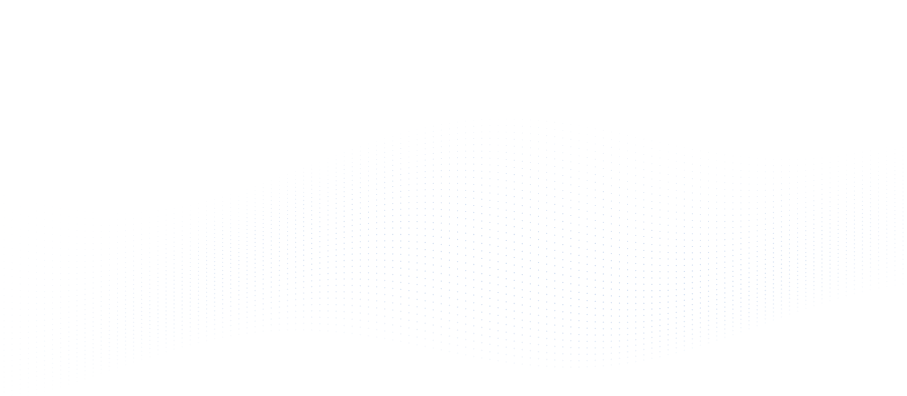

a. 支持异构/跨域混训: 支持多种国产卡、多种模型的跨域混训，等效算力超 95%。

混合训推
一体工具链
深耕跨域异构训推，盘活全国智算资源
混合训推一体工具链 是基于DeepLink开放体系，以国家项目为基，经过一系列实践验证后，最终形成产品化形态和可交付的方案。能适配当前主流模型、支持NV和国产多芯片异构、跨域的训推一体化工具链，打通释放异构计算潜能。
产品特性
b. 支持异构推理: 应用多元算力混合推理技术，支持异构国产芯片混推、跨域混推
c. 快速集成：可支持独立产品部署、产品融合、能力被集成，三种部署方案
超大规模、超95%等效算力、周单位长稳训练（好扩展）、（够高效）、（强稳定）
适配场景
（1）跨域多芯异构｜资源分散，孤岛林立
算力资源分布在不同城市机房，软硬件架构互不统一，需统一链路打通全域资源互通。
（2）集群多芯异构｜老小散弱，碎片堆积
集群内多品牌、多规格老旧算力混杂，经DeepLink异构算力适配，盘活碎片资源，提效降本。
核心能力
将不同算力、品牌的芯片共同组成更大的计算集群、或跨域集群，进行AI训练任务。在大模型算力上可综合更多算力，降低集群成本。主要技术核心有两点：异构芯片的通信打通和异构互联的并行训练策略
异构集群间混合调度：
支持推理集群的统一调度，实现推理任务在多集群间负载均衡调度，提升整体资源利用率；
异构国产芯片混推：
支持多款异构国产芯片的PD分离推理，突破单卡性能瓶颈，提升异构芯片集群整体吞吐；
国产芯片+NV混推：
支持国产芯片和NV芯片的PD分离推理，当前实际产业需求量已大量存在。
DeepLink多元算力混合推理加速方案
应用场景
科学智能
AIGC
具身仿真
…
服务层
模型应用服务(兼容主流API规范)
框架层
分布式推理引擎
vLLM
SGLang
LMDeploy
适配层
DeepLink 推理异构适配及性能优化
推理中间件（DLInfer）
多元统一通信库（DLSlime）
策略求解器（DLSolver）
硬件层
芯片A集群
芯片B集群
芯片C集群
…
PD分离策略
请求响应与处理
智能流量路由系统（DLRouter）
Prefill实例
KV Cache
KV Cache
Decode实例
KV Cache
分布式推理引擎
芯片A
芯片B
芯片C
芯片D
实操展示
产品架构
解决方案
算网融合
1. 跨域混训效率超 90%
2. 带宽要求低
数据不出域
1. 全链路安全可控
2. 广泛场景匹配
异构混训
1. 适配主流芯片及模型
2. 全链路极致效率
异构混推
1. TTFT 提升 34.5%
2. 吞吐提升 32%
支持模型
Qwen 系列
DeepSeek 系列
InternLM 系列
训推框架
分布式训练框架
Megatron-LM
DeepSpeed
XTuner
分布式推理引擎
vLLM
SGLang
LMDeploy
DeepLink 异构适配
异构并行策略 DLTrain
高效容错 DLRover
分布式跨域混合训练系统 DL-PS
智能流量路由 DLRouter
策略求解器 DLSolver
推理中间件 DLInfer
统一算子库 DLBlas
统一编译器 DLCompiler
统一通信库 DLSlime
智算芯片
Ascend
METAX 沐曦
平头哥
壁仞科技
摩尔线程
天数智芯
HYGON 中科海光
Enflame 燧原科技
Cambricon 寒武纪
昆仑芯